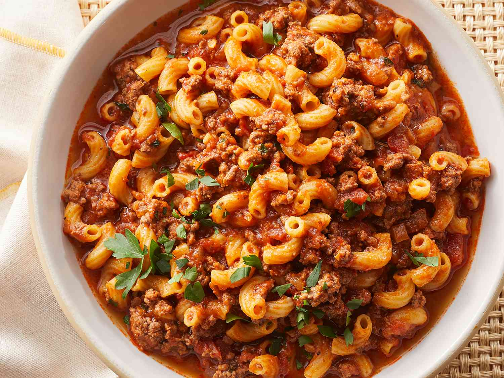

Description
This Americanized version of goulash was invented to stretch a small amount of beef into enough food for a not-so-small family. It's a simple dish that doesn't taste simple, so it's perfect for your weeknight dinner rotation.
Ingredients
- 1 tablespoon olive oil
- 2 pounds ground beef
- 1 large onion, diced
- 4 cloves garlic, minced
- 2 large bay leaves
- 2 tablespoons paprika
- 2 teaspoon Italian seasoning
- 2 teaspoon kosher salt
- ½ teaspoon ground black pepper
- 1 pinch cayenne pepper to taste
- 1 quart chicken broth
- 1 (24 ounce) ar marinara sauce
- 1 (15 ounce) can diced tomatoes
- 1 cup water
- 2 tablespoon soy sauce
- 2 cups elbow macaroni
- ¼ cup chopped Italian parsley
- 1 cup shredded white Cheddar Cheese
Steps
- Gather all Ingredients
- Heat oil in a pot over medium-high heat. Add ground beef and onion; cook and stir until beef is browned and crumbly and onion is translucent, about 5 minutes. Continue to cook and stir until liquid is evaporated, 3 to 5 minutes. Add garlic, bay leaves, paprika, Italian seasoning, salt, black pepper, and cayenne.
- Cook, stirring occasionally, until flavors come together, about 3 minutes. Pour in broth, marinara sauce, and diced tomatoes. Pour water into the sauce jar, swirl, and pour into the pot. Stir in soy sauce; bring to a simmer. Reduce the heat to medium and simmer until flavors intensify, about 30 minutes.
- Increase the heat to medium-high and bring to a rapid simmer. Stir in macaroni; cook, stirring occasionally, until just barely tender, about 12 minutes. Check for doneness after 10 minutes.
- Remove from the heat and discard bay leaves. Stir in Cheddar and parsley. Cover and let rest for 5 minutes. Taste and season as desired.